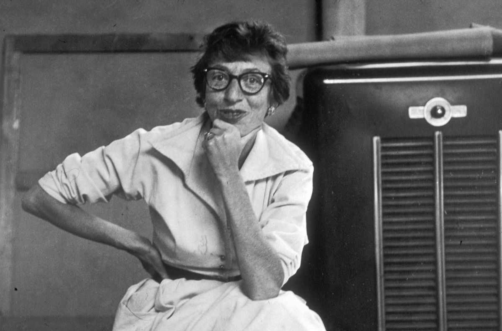

Lee Krasner on How to Be an Artist
Support didn’t come easily to Lee Krasner. Compliments of her early work were laced with blatant sexism: “This is so good you wouldn’t know it was done by a woman,” Hans Hofmann told her in 1937, while teaching Krasner at his art school. Other mid-20th-century art-world gatekeepers, like Clement Greenberg and Peggy Guggenheim, disregarded her work completely. But Krasner’s will to paint was stronger than any snubs, and she persevered in making some of the mid–20th century’s most spellbinding and tempestuous Abstract Expressionist compositions.
Krasner passed away in 1984, and the interviews she left behind were conducted primarily in the last 20 years of her life—after she finally emerged from behind the hulking shadow of her husband, drip-painter Jackson Pollock. Across these conversations, Krasner chronicled the hurdles she faced and the inspirations that drove her work. Below, we highlight several words of wisdom from the boundary-pushing painter. They touch upon the importance of persistence, spontaneity, failure, and risk.
Lesson #1: Fight for a place for your work
Krasner’s bid to be taken seriously as an artist began early. Born in Brooklyn, she began studying applied arts at an all-girls’ high school in Manhattan in 1921 at around age 13. She then attended Cooper Union’s women’s school, the Art Students League, the National Academy of Design, and finally, Hofmann’s School of Fine Arts. Krasner also became passionately involved in activist efforts that championed artists’ rights. As a member of American Abstract Artists in the late 1930s and ’40s, she poured energy into promoting abstract art (still a vanguard movement at the time) and demanding more exhibition opportunities for its artists. In a 1964 interview with Dorothy Seckler, Krasner recalled picketing in front of the Museum of Modern Art during a trustee meeting. The group’s demand was straightforward: show more American artists, instead of giving consistent priority to their European counterparts. Krasner pushed leaflets bearing the bold demand to “Show American Paintings” on board members as they exited the building.
Lesson #2: Welcome new directions
Throughout her painting practice, Krasner welcomed change with gusto. In the early 1940s, just after studying with Hofmann, her canvases swayed with geometric forms that “gave Cubism a rhythmic swing,” as writer Claudia Roth Pierpont has pointed out. In 1940, during a walkthrough of the fifth annual American Abstract Artists exhibition, master abstractionist Piet Mondrian also commended the “very strong inner rhythm” of these works. Despite positive feedback, Krasner hungrily explored other styles, searching for an aesthetic that more powerfully harnessed her emotions.

Portrait of Lee Krasner, 1953. Photo by Tony Vaccaro/Hulton Archive/Getty Images.
Art Gallery of Ballarat
Asia-Pacific Photobook Archive
Australian Centre for Photography
Bendigo Art Gallery
Bunjil Place
Buxton Contemporary
Centre for Contemporary Photography
Footscray Community Arts Centre
Geelong Gallery
Gertrude Contemporary
Heide Museum of Modern Art
Horsham Regional Art Gallery
Immigration Museum
Koorie Heritage Trust
La Trobe Art Institute
Margaret Lawrence Gallery
Metro Tunnel Creative Program
Monash Gallery of Art
Murray Art Museum Albury
National Gallery of Victoria
Parliament of Victoria
Perimeter
Photography Studies College
RMIT Gallery
RMIT School of Art
Royal Botanic Gardens Victoria
State Library Victoria
Victorian College of the Arts
West Space